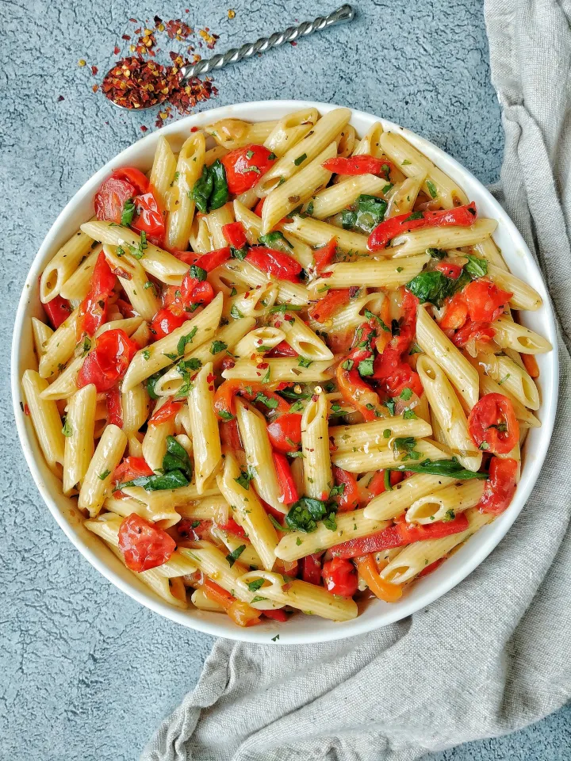

Home
Spinach Pasta

Creamy spinach pasta with red bell peppers, onions, and red pepper flakes.
This quick and easy pasta dish will quickly become a staple in your house thanks to its low-effort, high quality results!
This dish combines spinach, red bell peppers, onions, and garlic with a creamy, silky smooth sauce. Feel free to make it with whatever pasta you have lying around.
Ingredients:
- 1 Bag Spinach
- 1 Large Onion - Diced
- 4 - 8 Cloves Garlic (Depending on taste) - Minced
- 1 Red Bell Pepper - Diced
- Parmesan Cheese - Grated Off The Block - To Taste
- 3/4 Cup Heavy Cream
- 3/4 Cup Pasta Water
- 1 Box Pasta
- MSG - To Taste
- Salt - To Taste
- Freshly Ground Black Pepper - To Taste
- Red Pepper Flakes - To Taste
Steps:
- Prep your veggies. An experienced home chef will be able to do this while cooking, but if you aren't feeling confident, get everything chopped beforehand.
- Heat up a couple of tablespoons of olive oil over medium heat in a large dutch oven or pan. It needs to be big folks, a whole bag of spinach is going into this.
- Start boiling the water you'll use for your pasta in a different pot. NOTE: The starchier the water, the better, so try and use as little water as possible to cook your pasta in. A general guideline I like to follow is to fill the pot until it just covers the pasta.
- Once your pan is heated, throw in your diced onion and cook it until the pieces are at least transluscent. Feel free to cook them longer depending on how much time you have on hand and if you're more patient than hungry.
- Throw in your diced red bell pepper and cook until bright red.
- Throw in your garlic and cook until no longer raw.
- Put in the entire bag of spinach in 2 - 3 batches and cook until fully wilted. You can put it all in at once if your pan is large enough, but doing it in smaller batches makes it wilt faster and saves you time overall.
- By this point, your pasta should be finished or already done. When draining the pasta, save 3/4 of the pasta water.
- Add both the heavy cream and the pasta water to the pot.
- Add your seasonings, minus the red pepper flakes. TASTE AS YOU ADD!!! Keep a spoon handy and make sure you aren't oversalting the dish! We're also going to be reducing this sauce, so err on the side of less salty than you like, because the flavors will intensify as the sauce becomes thicker. NOTE: The salt and MSG will bring a lot of liquid out of the veggies. This is normal, don't worry if it's looking watery.
- Reduce the sauce by brining it up to a boil then reducing to a simmer. You want steam to be blasting out of the pot.
- While the sauce is reducing, grate your parmesan cheese into the pot. Again, this stuff is salty, taste as you go.
- Once the sauce has reduced to your desired thickness, stir in your red pepper flakes. I like to err on the side of more than I think I need due to the creamy sauce cutting a lot of the heat that the flakes bring.
- Serve and enjoy!